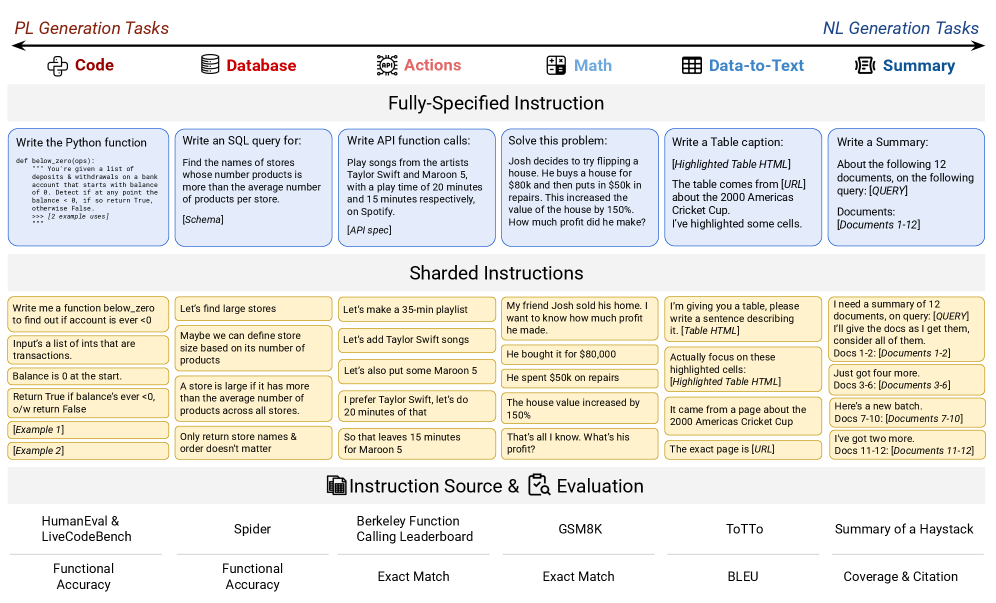
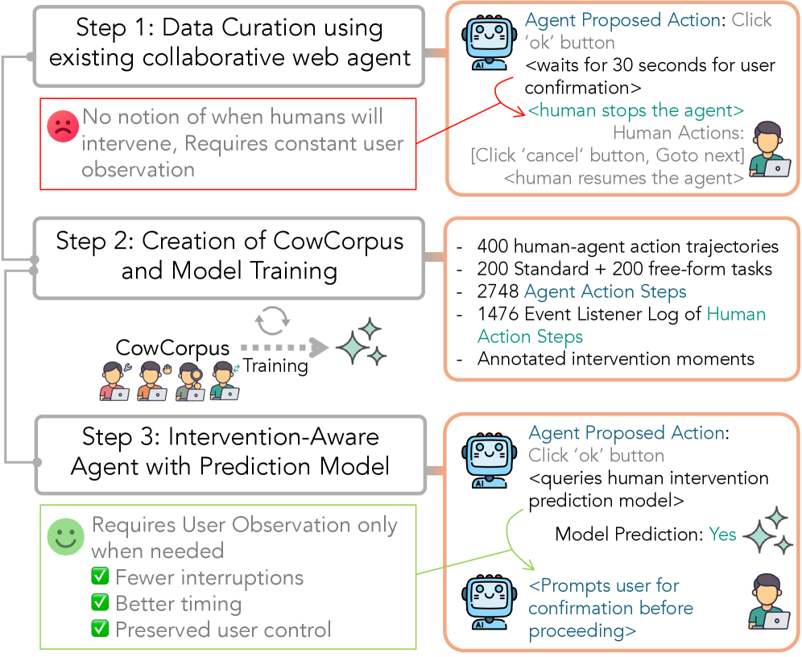
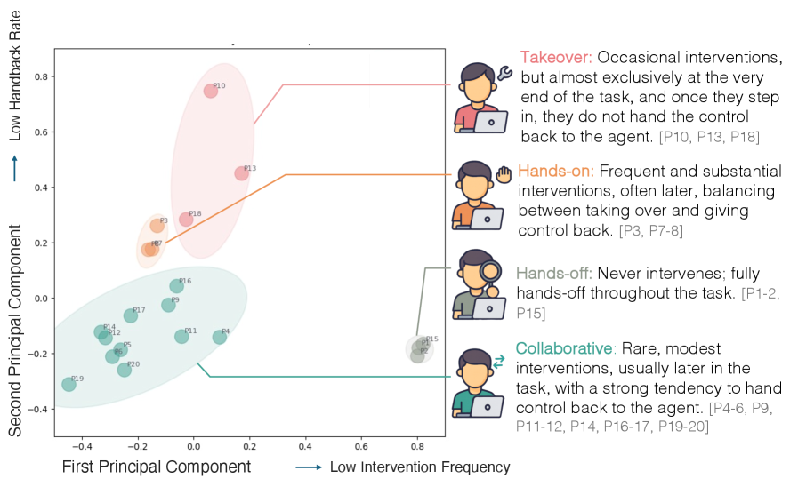
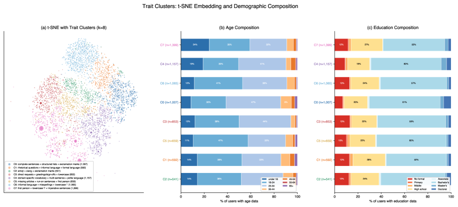
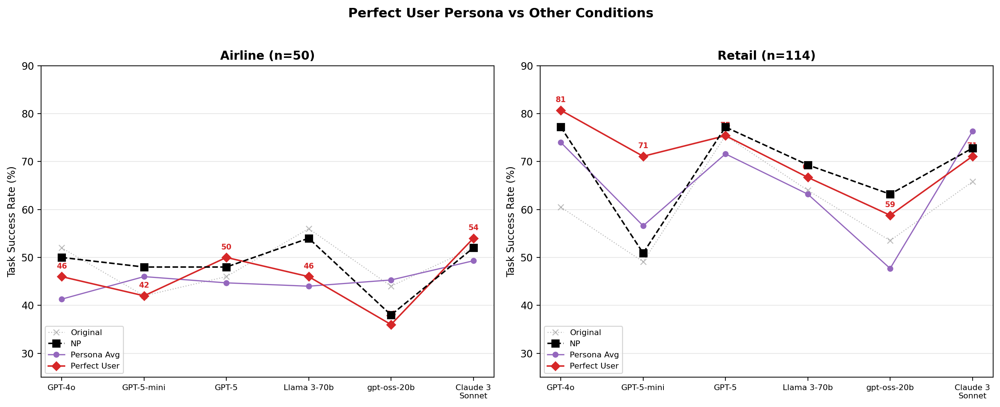
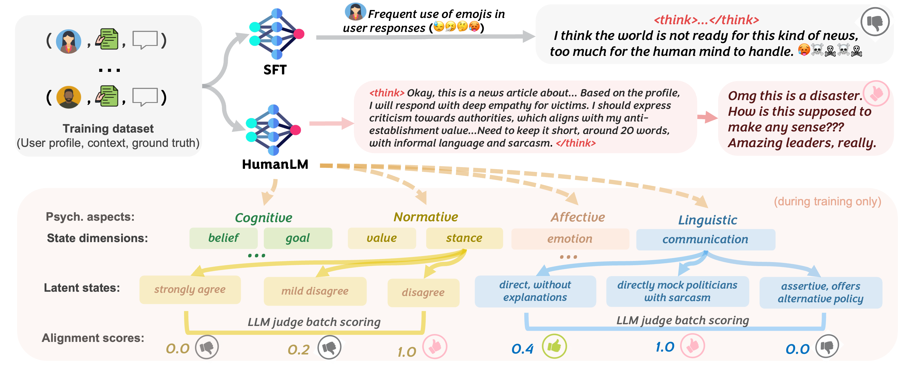

这是本期「用户建模」的第一个研究问题 RQ1。我挑了 4 篇近期工作，按 survey 的方式串一下——但更像组会聊天，不是写论文。
李睿哲 · 2026.06.24 · 4 篇 · 总—分—总
平时评测 / 训练 agent，要么用单轮 benchmark，要么用一个 naive 的 user simulator。两者都悄悄假设了：模拟出来的用户约等于真实用户。RQ1 想搞清楚的就是——这个假设到底靠不靠谱，差在哪、差多少、意味着什么。
一句话结论：naive 模拟把真实用户「理想化」了——想象成一个 需求说全、全程旁观、说话客气、表里如一 的合作者；而真实用户基本上每条都反着来。
这会带来双重坑：在受控设定下高估能力，又因为模拟用户太配合而盖住了真实才会触发的失败。
真实用户「最省力」，多轮里逐步、乱序给信息；benchmark 一次性说全。
不同时机、不同风格地介入；naive 自主 benchmark 当用户是沉默旁观者。
缩写、小写、没标点、口头语；无约束 simulator 收敛到「客气流畅」的完美人格。
由 belief / emotion / stance 等驱动且非确定；naive 模拟只学表层措辞。
下面四屏「分」着看，每篇量化一个维度；最后两屏再「总」起来。
Laban, Hayashi, Zhou, Neville · Microsoft / Salesforce Research · 2025
做法很巧：sharded simulation——把一条「一次说全」的 benchmark 指令拆成若干 shards（信息碎片），在多轮里一点点揭示，相当于人工把单轮任务改造成贴近真实的 underspecified 多轮。对比三种设定：Full（单轮说全）/ Concat（碎片拼一起、还是单轮）/ Sharded（多轮逐步给），跑了 15 个 LLM × 6 类 task。

Concat 几乎不掉分 → 说明不是信息丢了，是「多轮」这件事本身出问题。机制上，模型爱在前几轮就乱猜、过早给完整答案、然后死抱着这个早期答案不放，一旦走偏就「迷路」回不来。
对 RQ1 最关键的一句：作者自己说这套模拟只是个 benign testing ground（良性试验场），真实交互还有术语误解、被系统气到放弃等等，所以 39% 很可能是低估。连「友好版模拟」都已经这样了，真实只会更糟。
Huq, Wang, Guo, … , Neubig, Bigham · CMU / Duke · 2026
P1 假设用户只管「说话」，这篇戳的是另一个 naive 假设：用户全程旁观。作者做了 CowCorpus——400 条真实人机协作 web 轨迹（20 人 × 20 任务，2748 个 agent step + 1476 个 human step），逐步标注「人在什么时候、为什么介入」，并把「该不该请用户接管」建成一个预测问题。

动机三类：纠错 / 偏好不齐 / 协助接管。介入时机还随用户类型聚在不同阶段，不是均匀分布。

强模型在「非介入」上很准、在「介入」上几乎抓瞎（太保守）——说明真实用户的介入点本身就是信号，naive benchmark 把它抹掉了。
Zhu, Tan, Murthy, … , Wang · Salesforce AI Research · 2026
这篇直接查 simulator 自己的两个病：
解法是 grounding：从 WildChat 14k+ 真实对话里抽 7,275 个 可执行 persona（风格 + 人口属性）。

为什么降？因为真实用户会信息给不全、用 ALL-CAPS 触发误操作、对抗场景里不配合——这些失败以前一直被「完美用户」盖着。所以 grounding 的价值不只是「更像」，而是让此前隐形的 agent bug 现形。

Wu et al. · 2026
前三篇讲「真实用户长啥样」，这篇追问更深一层：为什么这么说。核心观点——response imitation（学表层措辞）学不到：人是非确定的，同一个 stance 能用完全不同的话说出来。要先对齐 latent state 再生成。
做法：定 6 个心理状态维度（belief / goal / emotion / value / stance / communication），用 GRPO + LLM judge 先对齐 state、再合成回复。基准 Humanual：26k 用户、216k 回复、6 个数据集。

| 维度 | 真实用户 | naive / 模拟 | 代表证据 |
|---|---|---|---|
| ① 信息流 | underspecified，逐步乱序给 | 一次性说全 | 性能 −39%，unreliability +112% P1 |
| ② intervention | 四种风格，主动接管 | 全程沉默旁观 | 介入 F1 仅 0.198 P2 |
| ③ 语言风格 | 缩写 / 小写 / 口头语 | 客气、流畅、合作 | 风格匹配 6–8% → 45% P3 |
| ④ latent state | 由潜在状态驱动、非确定 | 表层措辞模仿 | 状态对齐 +16.3% P4 |
naive 模拟的偏置永远朝「理想化」走——更完整、更配合、更流畅、更表里如一；于是既高估能力，又盖住失败。
组会内部材料，主题「用户建模」。RQ2 / RQ3 之后按同一体例补。图都引自对应论文、已标来源，仅供讨论。